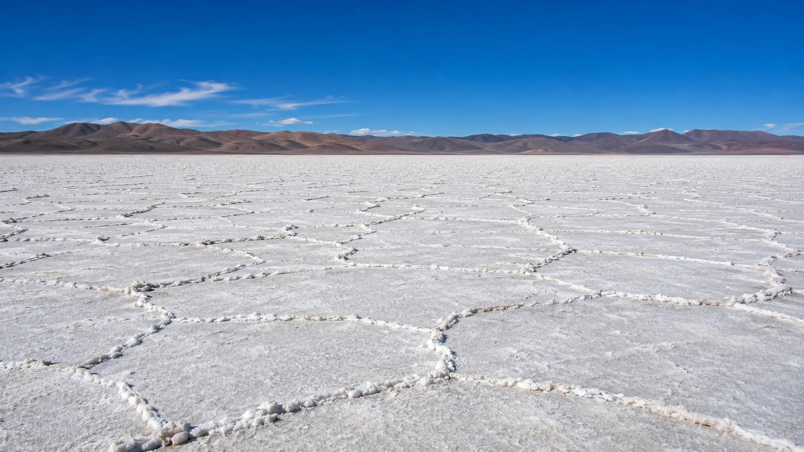
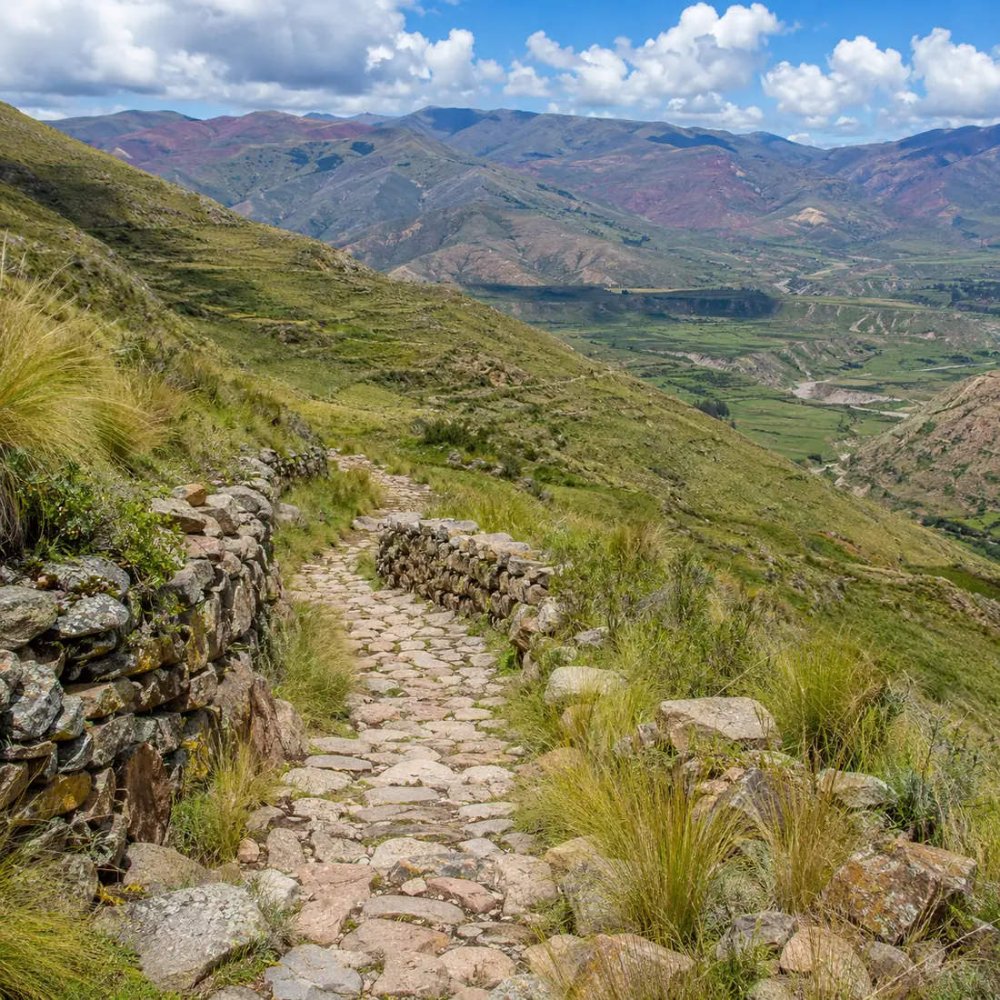
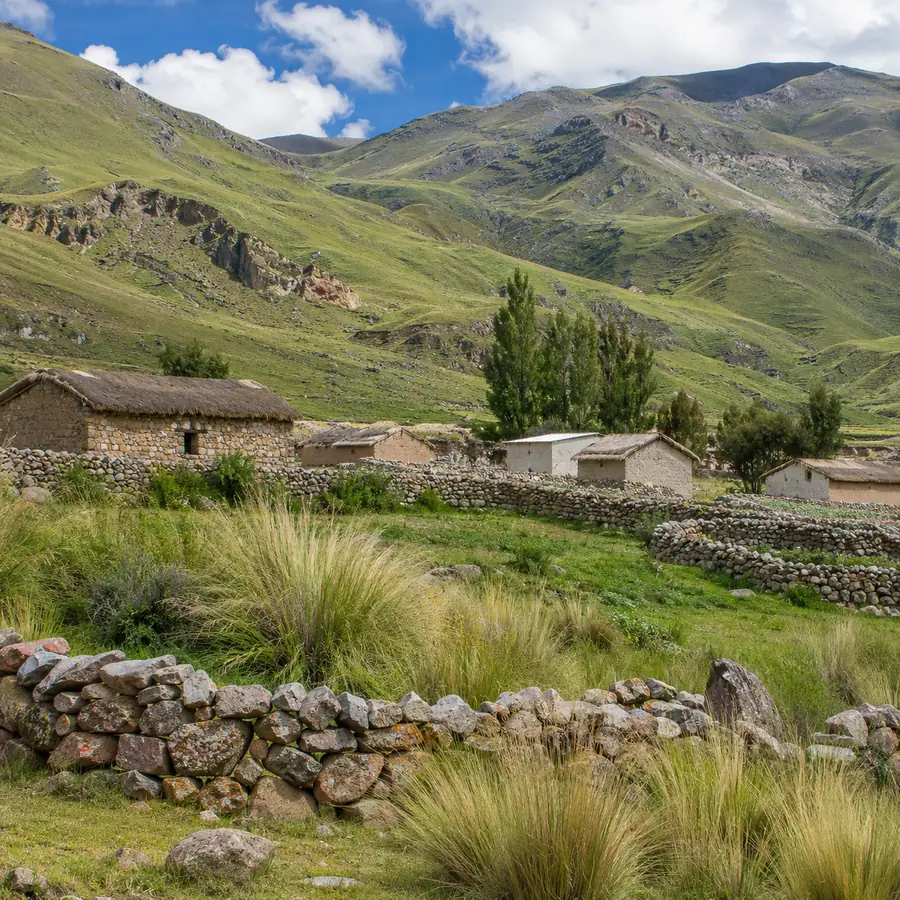
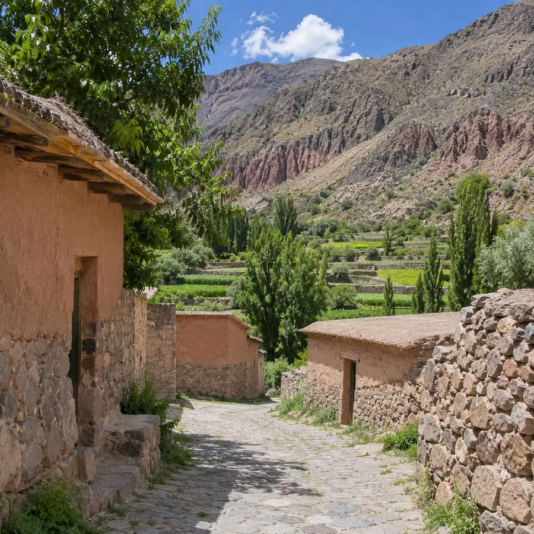
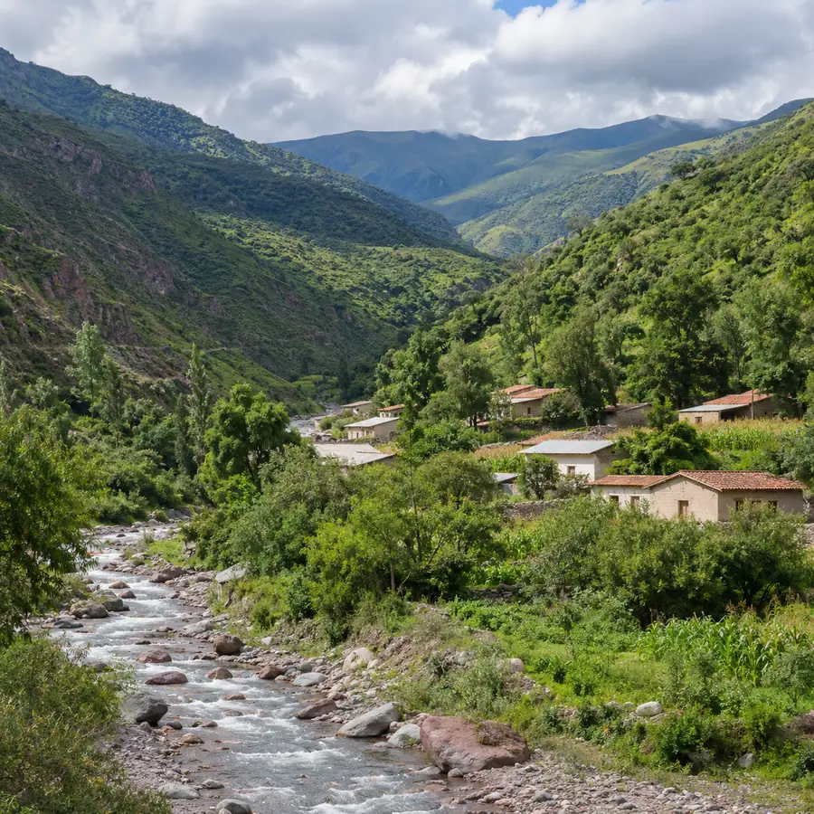
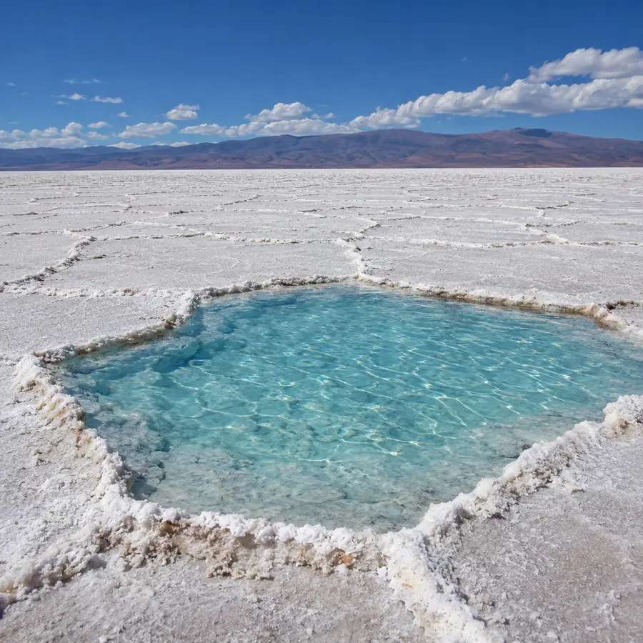
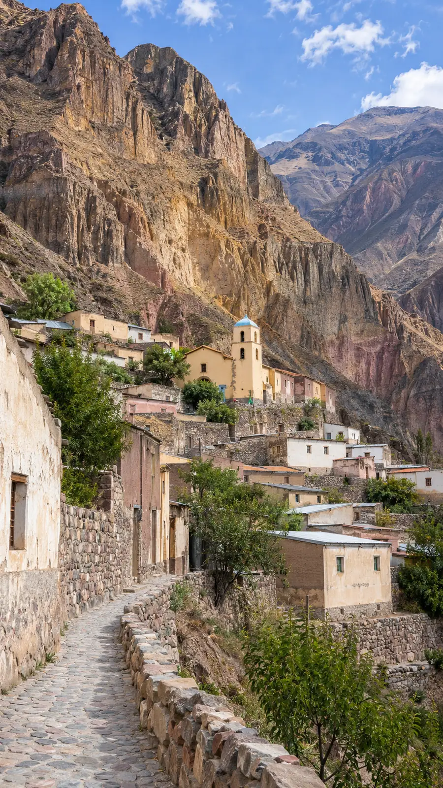
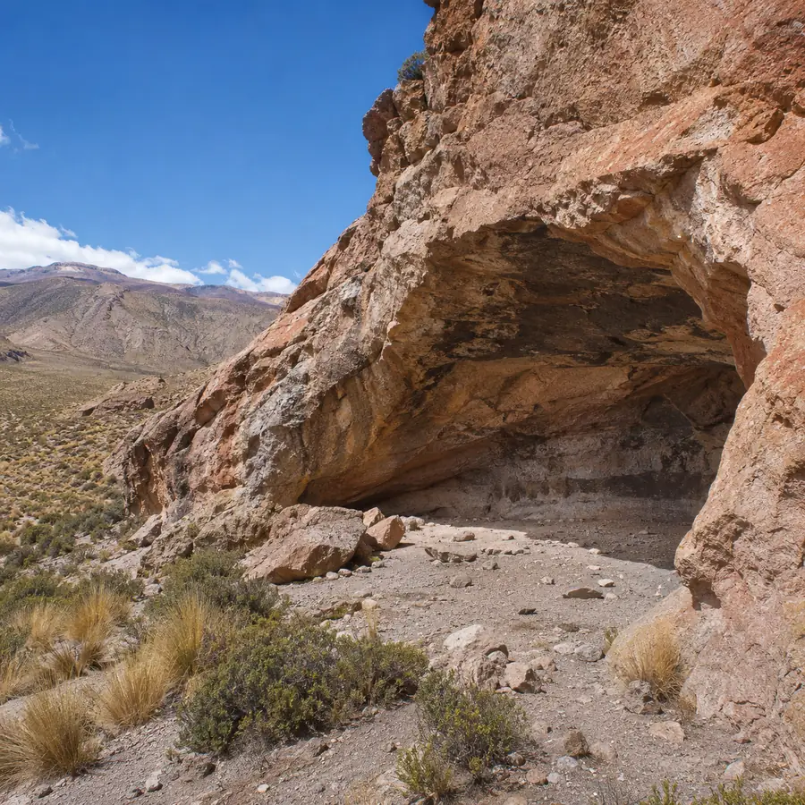
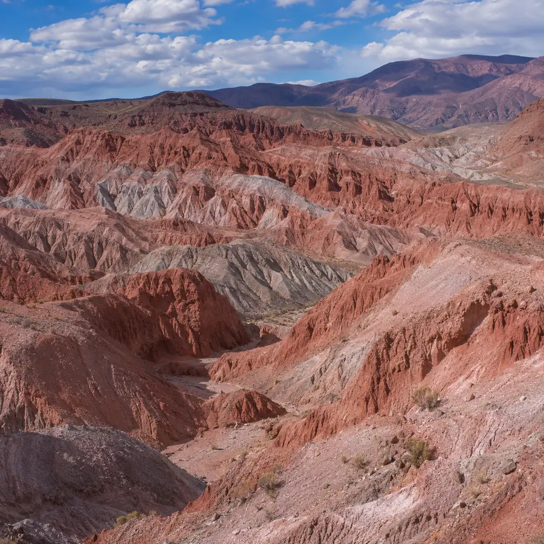

Descubrí nuevos paisajes
Viajes guiados por el norte jujeño
Salinas Grandes, Iruya, los pueblos del Valle Grande y la Puna más alta, con guía de principio a fin.
Con guía, de la consulta a la vuelta
-
Contanos a dónde querés ir
Escribinos por WhatsApp con el destino, la fecha que tenés en mente y cuántos viajan.
-
Coordinamos la salida
Te confirmamos disponibilidad, horario y punto de encuentro antes del día del viaje.
-
Viajás con guía
Te acompañamos en todo el recorrido: cada parada, con alguien que te cuenta qué estás mirando.
Antes de salir
¿Cómo reservo un viaje?
Por WhatsApp, de 8 a 20 h: contanos el destino, la fecha y cuántas personas viajan, y te confirmamos la salida.
¿Qué conviene llevar?
Abrigo en capas, gorro, anteojos de sol, protector solar y agua. En la Puna el sol pega fuerte y la temperatura cambia rápido en el mismo día.
¿Y la altura?
Varios destinos pasan los 3.000 metros. Conviene comer liviano, tomar agua y avisarle al guía si te sentís mal.

7 destinos · Puna, Quebrada y Valle Grande
De la sal blanca al valle verde
Cada uno con su camino y su altura. Elegí uno y consultalo por WhatsApp.
-

Valle Grande
Santa Ana
Pueblo de altura entre pastizales y corrales de piedra, con casas de techo de paja y un tramo del antiguo Camino del Inca.
Consultar por Santa Ana -

Valle Grande
Caspalá
Casas de adobe, pircas y andenes de cultivo entre cerros rojizos, sobre el camino que baja de la Quebrada hacia las yungas.
Consultar por Caspalá -

Valle Grande
Valle Colorado
Un valle verde, con río y casas de tejas, donde los cerros se cubren de monte: el lado húmedo del viaje, después de la Puna.
Consultar por Valle Colorado -

Puna · Cuesta de Lipán
Salinas Grandes
Un desierto de sal a unos 3.400 metros, con la costra partida en polígonos y piletones de agua turquesa. Se llega subiendo la Cuesta de Lipán desde Purmamarca.
Consultar por Salinas Grandes -

Salta · entrada por Humahuaca
Iruya
Un pueblo colgado de la ladera, con calles empinadas de piedra y casas de adobe. El camino cruza el Abra del Cóndor antes de bajar al valle.
Consultar por Iruya -

Humahuaca · sitio arqueológico
Inca Cueva
Aleros de roca rojiza con pinturas rupestres de los primeros pobladores de la región, entre pastizales y cerros de altura.
Consultar por Inca Cueva -

Puna · Cusi Cusi
Valle de la Luna
Cerros de arcilla tallados por el viento en agujas y laberintos, cerca de Cusi Cusi, en el extremo norte de la Puna.
Consultar por Valle de la Luna
8 a 20 h
Escribinos y coordinamos tu salida
Te respondemos por WhatsApp de 8 a 20 h. Si preferís, dejanos tus datos y te escribimos nosotros.